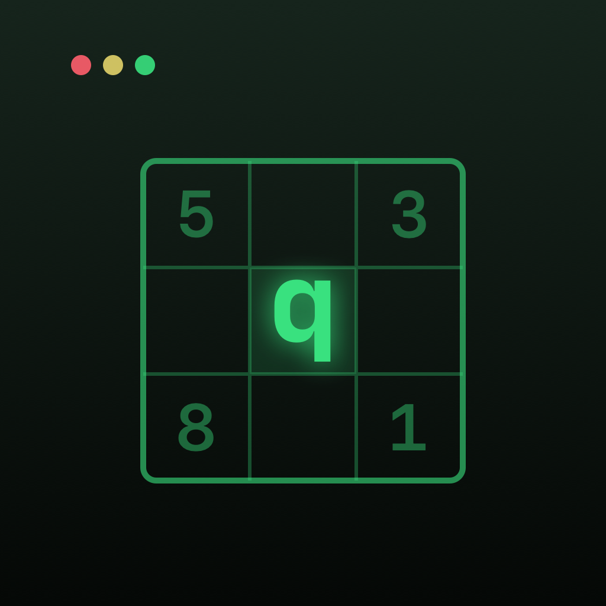

$ open ~/sudoq/press

SudoQ press kit
SudoQ is a sudoku for people who live in the terminal: monospace boards, a console with commands and easter eggs, a Dev Mode that bends the rules, and a career ladder from Script Kiddie to CTO. Clean logic underneath: every board has one solution and hints explain the technique behind the next move.
Fact sheet
| Developer | Independent developer, Poland |
|---|---|
| Released | 6 November 2026 |
| Platforms | iPhone and iPad (iOS 17 or later), Mac (macOS 14 or later) |
| Price | Free download with 2 modes: 60 Classic boards and a new daily board every day. Root Access, a one-time in-app purchase ($3.99, €3.99, 19.99 zł), adds 3 more advanced modes. Family Sharing; one purchase covers every device. |
| Languages | English, Polish, German, Spanish, French, Italian, Portuguese (Brazil), Japanese, Simplified Chinese |
| Privacy | No account, no ads, no analytics, no tracking. Works offline. |
| Contact | tresciwy-rowniny.4b@icloud.com |
Short description
A terminal-styled sudoku for iPhone, iPad and Mac, with a daily board for everyone, a career ladder from Script Kiddie to CTO, eleven variants and a Dev Mode with binary boards.
Free: 2 modes
- Daily Challenge. A new board every day, the same for every player. The week ramps up from Monday to Saturday, and Sunday brings a variant. Streak, calendar, widget and an optional reminder.
- Classic. 60 boards on a career ladder from Script Kiddie to CTO: six levels of ten, opened one at a time and graded by the techniques they take, from singles to X-Wing.
Root Access: 3 more advanced modes
- Variants. Killer, Thermo, Arrow, Diagonal, Windoku, Odd/Even, Consecutive, Renban, Anti-Knight, German Whispers and Palindrome: 11 rule sets × 3 levels, with a freshly generated board every time, so the boards never run out.
- Dev Mode. 10 hand-built tickets that bend the rules: digits 0–8, a binary display, prime-only cells, sorted arrays, Fibonacci lines, a bug hunt with wrong givens and a hotfix in production with three lives.
- Ranking. Endless runs with three lives, where the difficulty climbs every two boards.
Root access is for seniors. The developer's advice is not to unlock it before finishing Classic:
the variants, Dev Mode and Ranking build on every technique the Classic ladder teaches, and they are hard
going without it. In a terminal you don't hand sudo to an intern.
Everywhere
- Hints that explain. A hint names the technique and shows where to look before it reveals a digit.
- The console. Type
:and tryhelp,hint,theme dracula,:wqorgit blame. 22 secrets are hidden in it. - Also: 11 colour themes, 42 Game Center achievements, statistics with an activity map, iCloud sync, VoiceOver, haptics and sound. On the Mac, everything works from the keyboard.
Screenshots
Click a picture for the full 1600 × 1000 file. Free to use in coverage of SudoQ.